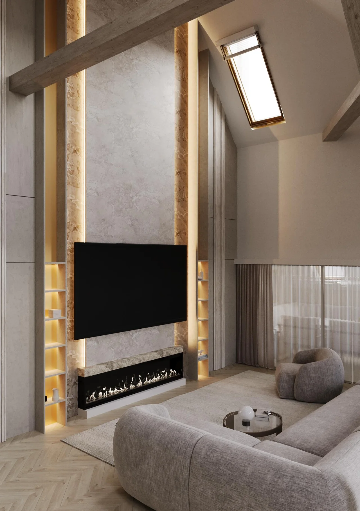
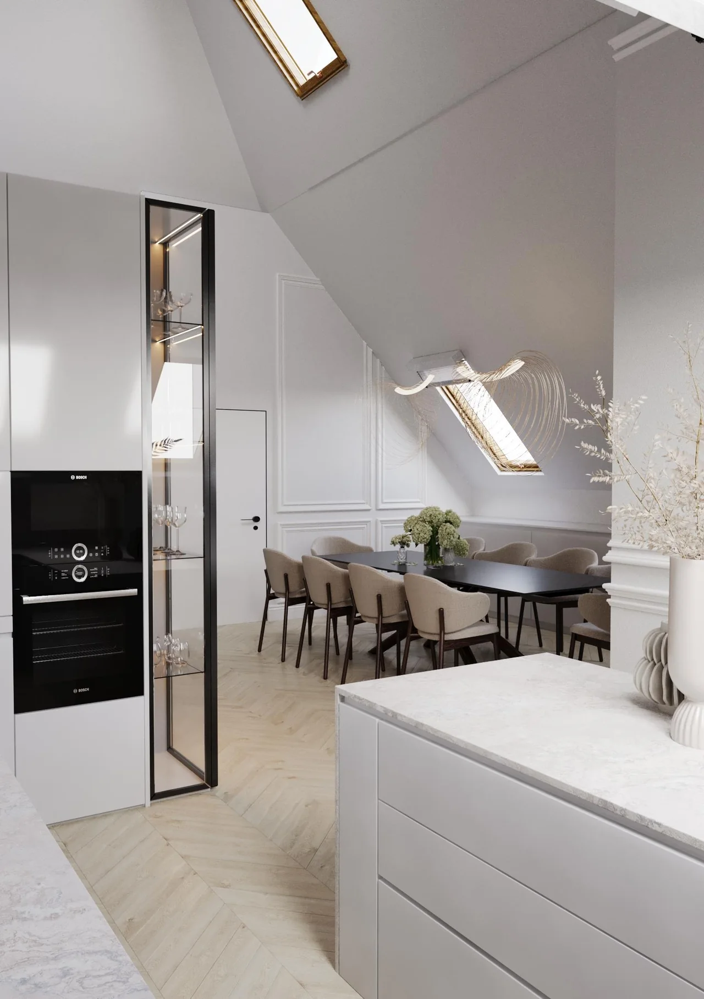
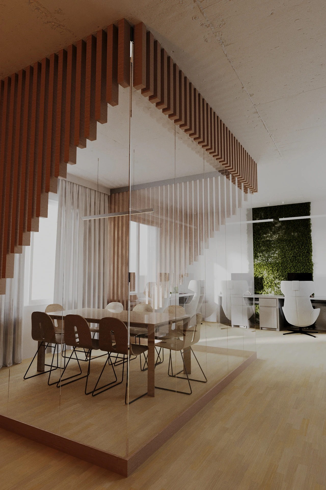
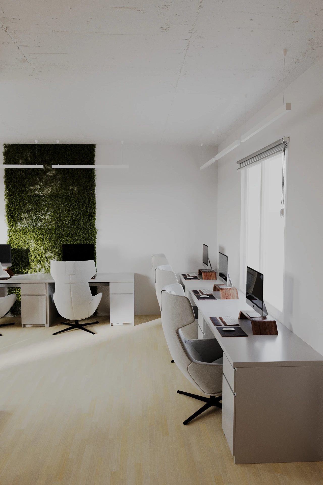

Living room with a garden viewLiving room concept: warm suede, stone and timber against a garden view.Open project
FRANKOF showroomShowroom for a furniture factory: zoning for collections in 3ds Max, then the built space.Open project
 Attic apartmentWhole-apartment concept under a pitched roof: kitchen and dining, living room with fireplace, bedroom, study, bathroom.Open project
Quiet luxury bedroomBedroom concept: panelled timber wall, marble band and soft pendant light.Open project
Travertine kitchenKitchen concept built around the product: travertine island, timber fronts, hidden linear light.Open project
 OfficeOffice concept: a glass meeting room inside a slatted timber partition, open workspace with a moss wall.Open project